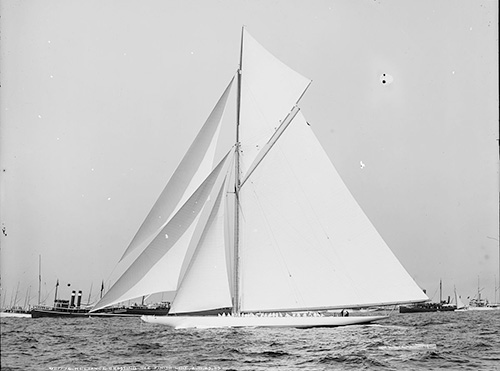

The Second World War marked the end of the J-Class, and when America’s Cup racing began again in 1958, it signalled the beginning of the 12-Metre era. The Americans would successfully defend eight more times over the next 25-year period. Sadly, in 1939, all but three of the original ten J’s were used as scrap metal for the war effort. The three surviving J-Class yachts have been restored and still sail in regattas around the world.
In 1970, more than one yacht club interested in challenging for the America’s Cup, so for the first time, a competition was staged to determine the single Challenger that would face the Defender, the New York Yacht Club. The French malletier Louis Vuitton became involved with the America’s Cup in 1983, supporting the Challenger Selection Series that came to be known as the Louis Vuitton Cup. The idea was twofold; to develop and identify the strongest possible challenger for the America’s Cup and ensure that they were sufficiently battle-tested through tough competition to beat the Defender. The defenders had been involved in this type of selection series for most of the century, but until recently, there had been but one Challenger.
Australia was one of the challenging countries in 1983, and the ‘Men from Down Under’ brought a secret weapon. Australia II sported a boxing Kangaroo flag in the rigging as she was towed out to sea, and under the water, a radically-designed winged keel that gave the 12-Metre Class boat superior speed under most conditions. The Australians kept the secret to themselves, draping large ‘modesty skirts’ from the deck to the ground when the boat was hauled from the water – keeping prying eyes away and all the time building speculation as to what could be under there. Dennis Conner, ‘Mr. America’s Cup’, was charged with defending against the upstart Australians, who handily whipped through the challenger fleet and carried off the first Louis Vuitton Cup. That summer, in 1983, the America’s Cup had pride of place on every newscast, and front-page status in every paper. There was a sense of history about that season; that somehow, finally, the New York Yacht Club’s 132-year winning streak was going to come to an end. Equipment problems on the Australian boat allowed Conner to jump ahead early in the best of seven series, but Australian skipper John Bertrand battled back, eventually bringing the series to a score line of 3-3. The seventh and final race was symbolic of the entire series, with Conner’s Liberty leading for most of the course in a light and shifty breeze. It was not until the final spinnaker run that Australia II was able to jump into the lead, and then hold on to it despite a ferocious, last-gasp assault over the last few minutes. For the first time in 132 years, the America’s Cup was leaving the New York Yacht Club. Conner, then representing the San Diego Yacht Club, won the right to fight another day in 1987. Held in Fremantle, he won the Louis Vuitton Cup to become the Challenger and then delivered a shut-out victory of 4-0. This America’s Cup featured quite an on-the-water show, with the famous “Fremantle Doctor,” strong afternoon sea-breezes, blowing up incredible sailing conditions with giant white-capped seas, to challenge both the sailors and equipment.
Dennis Conner's Comeback in 1987 (AC26) Dennis Conner, basking in presidential welcomes and ticker-tape parades through New York, was in no rush to settle the details of the next event, and New Zealand, exploiting a loophole in the century old Deed of Gift, demanded an immediate challenge in 1988. What resulted was the first America’s Cup Finals where two different styles of boat raced each other, with the Kiwis in a giant 90-foot waterline boat against Conner in a much smaller but faster hard-winged catamaran. The best of three series went to the Americans and after numerous court challenges – the teams spent far more time battling in a courtroom than they did on the water – the result stood.